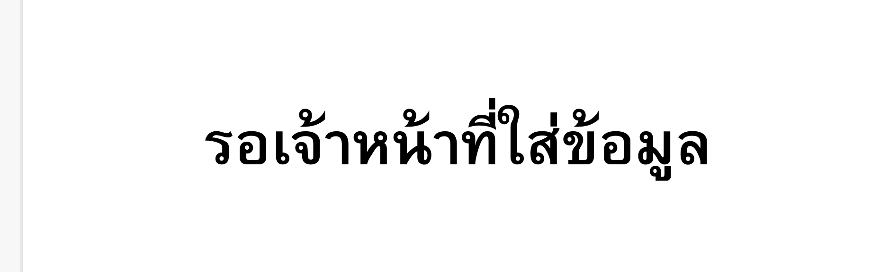

ผังบุคลากรโรงเรียน
นายสมชาย โกจินอก
ผู้อำนวยการโรงเรียน
โทร 089-23850-86
นายศิราวุธ บุญชู
รองผู้อำนวยการฝ่ายวิชาการ
นาย พงศ์ธนพรรณ เขียวอ่อน
ครู คศ.3
นาง พรปวีณ์ เพชรแทน
ครู คศ.3

นาง จุฑามาศ มะณีแสง
ครู คศ.3
นาย สมใจ มณีโชติ
ครู คศ.3
นางสาว สุธิดา สุภากาญจน์
ครู คศ.3
นางสาว รัตติกาล สายสินธุ์
ครู คศ.3
นางสาว ประภัสสร ทนงเดชถาวร
ครู คศ.3
นางสาว นภาพร จารึกกลาง
ครู คศ.3
นางสาว ไอรีน นาคศรีสม
ครู คศ.3
นาย อาทิตย์ พงศ์อารี
ครู คศ.3

นาย สงกรานต์ สายคำภา
ครูผู้ช่วย

นาง ขนิษฐา ต้องเชื้อ
ครูผู้ช่วย

นาย ศุภกฤต ปลื้มจิตร
ครูผู้ช่วย
นางสาว อตินุช โคบาล
ครูผู้ช่วย

นางสาว ประไพ สอดศรี
ครูผู้ช่วย
นางสาว อทิตยา แสงงาม
ครูผู้ช่วย
ว่าที่ ร.ต.หญิงเบญจมาศ น้อมมนัส
ครูพนักงานราชการ
นางสาว ฆรวัณณ์ เหล่าไพรวัลย์
ครูพี่เลี้ยงเด็กพิการ
นางสาว ปณิสรา รัตนชัยวัฒน์
ครูพี่เลี้ยง

นาย นาตยา พงศ์อารี
ครูผู้ช่วย